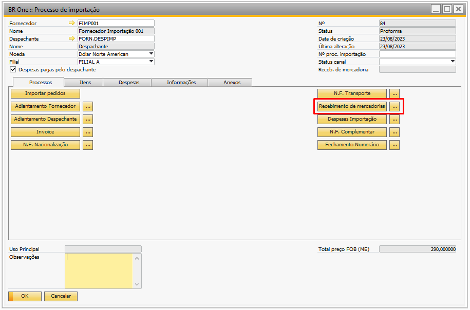
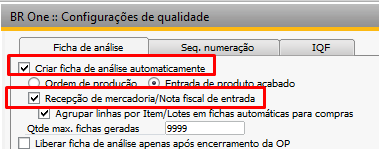
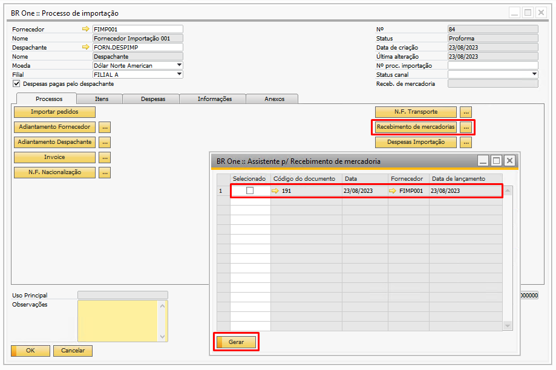
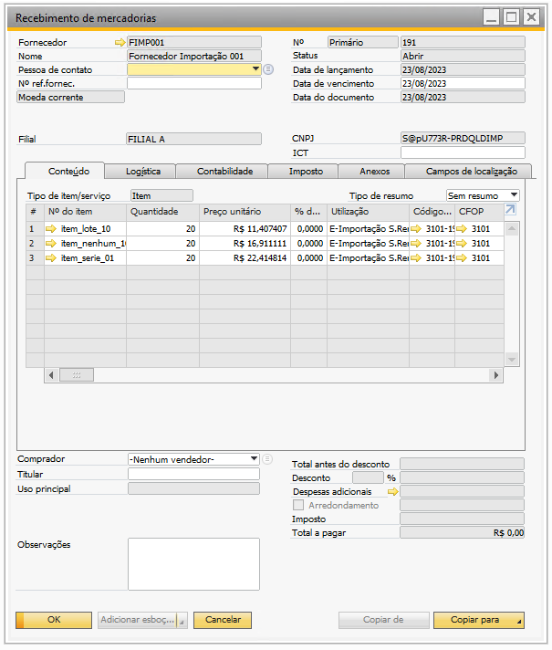
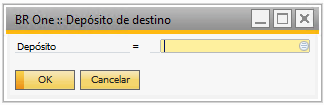
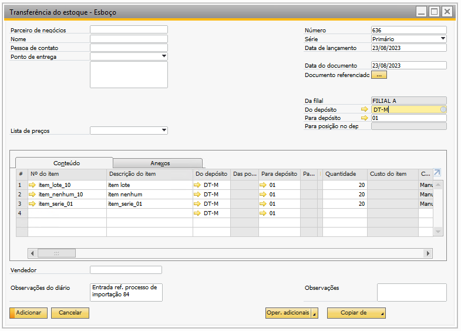
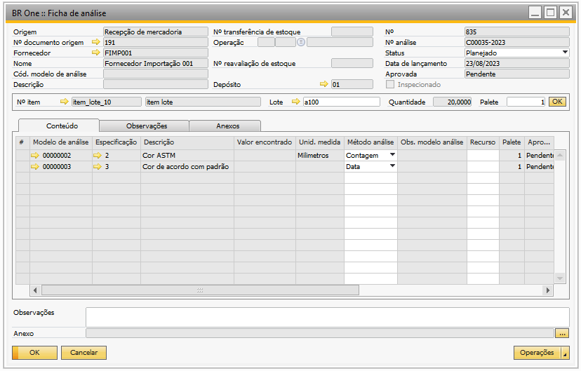
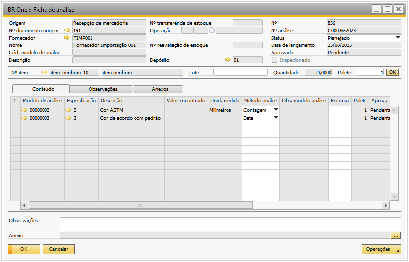
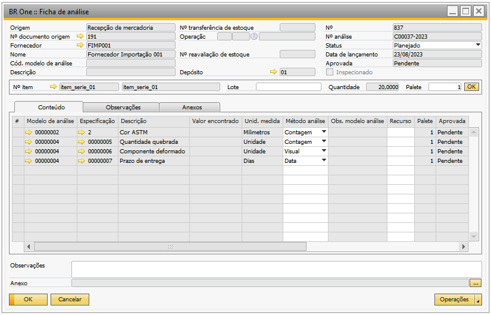

Criar ficha de análise automaticamente no processo de Importação
A criação automática da ficha de análise para os itens de compra provenientes do processo se ‘Importação’, ocorre no momento da adição do documento de ‘Recebimento de mercadorias’ existente no processo.
Para que a criação da ficha ocorra normalmente o parâmetro ‘Criar ficha de análise automaticamente’ junto com o parâmetro ‘Recepção de mercadoria/Nota fiscal de entrada’ devem estar marcados, além do item importado possuir configurado um ou mais modelos de análises.
{kind=link}
Ao clicar no botão ‘Recebimento de mercadorias’ do processo de importação será aberto a tela do assistente, onde deverá ser selecionado o documento desejado.
 {kind=link}
{kind=link}
Considerando o documento acima, temos os itens item_lote_10, item_nenhum_10, item_serie_01, onde todos possuem modelo de análise.
Portanto, ao gerar o documento através do assistente, será solicitado pelo add-on o depósito onde os itens serão recebidos, ao definir o depósito e clicar em ‘Ok’.
{kind=link}
Será aberto a tela de ‘Transferência de estoque’, que virá preenchida com os itens do documento selecionado e com o depósito definido, ao adicionar a transferência será realizado a seleção de lote e série para os itens e as ficha de análise serão criadas automaticamente para todos os itens que possuam ‘Modelo de analise’ vinculado.
{kind=link}
Em nosso exemplo, foi criado 3 fichas de análise, uma ficha para cada item do documento de ‘Recebimento de mercadorias’.
  {kind=link}
{kind=link}
{kind=link}